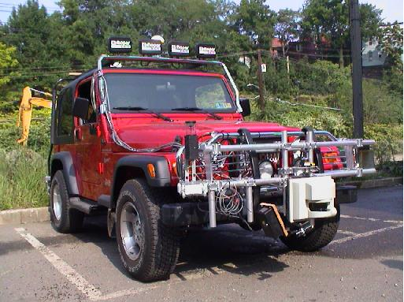
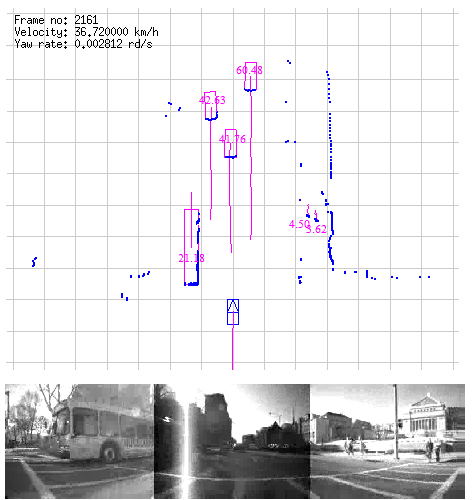
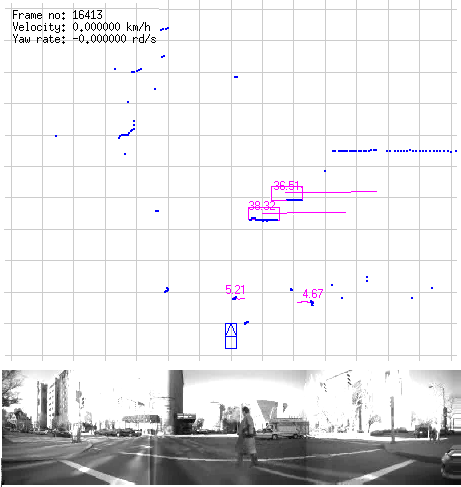

NAVLAB
Last update: april 17th 2012
Project description
We present how we use the public dataset NAVLAB obtained on the CMU demonstrator (Figure 1) to test and validate our contributions on model-based tracking [Vu09]. This dataset was collected using a moving vehicle driven in real-life traffics.
CMU Demonstrator

FIGURE 1: The Navlab testbed.
A laserscanner is mounted on the moving vehicle. The maximum laser range of the scanner is 80m with the horizontal resolution of 0.5 degre. We only use laser data and odometry vehicle motion information such as translational and rotational velocity (speed and yaw rate) are computed and provided by internal sensors. Images from camera are only for visualization purpose.
Experimental Results

FIGURE 2: Different object classes are successfully detected and tracked.

FIGURE 3: Example of tracking with occlusion.
On this demonstrator, we test our approach for SLAM with moving objects detection [Vu07] and DATMO [Vu09]. The grid has a size of 25m x 20m and each cell has a size of 20cms.
Figures 2 and 3 show an example of our detection and tracking algorithm in action. In the ego-vehicle's view, the detected moving objects and their trajectories are shown in pink color with current laser scan is in blue color. Moving objects in the situation include a bus moving in the opposite direction on the left, three cars moving ahead and two pedestrians walking on the left pavement. Figure 3 shows an example of our detection and tracking algorithm when an occlusion occurs. Even if only a part of the second car is detected by the laser, we are able to track this occluded car.
With initial evaluations, the MCMC detection and tracking outperforms the detection and tracking using MHT in our previous work in terms of a higher detection rate and less false alarms.
A video could be found here.